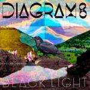

Music Reviews
-
Richard Youngs Amaranthine
Reflections on Richard Youngs and the avant-garde.
Michael Iovino reviews... -
ProEf All Eye Know EP
This Toronto-based producer offers some interesting, if unambitious, leftfield hip-hop beats, partly constructed from found sound from his recent EU tour.
Stephen Wragg reviews... -
Guided By Voices Let's Go Eat The Factory
Sixteen albums in and still going strong. Robert Pollard reconvenes the seminal mid 90s GBV line-up for a classy reunion.
David John Wood hears voices... -

Diagrams Black Light
Former Tunng member Sam Genders has delivered an album of brainy arrangements and palatable textural work.
Juan Edgardo Rodríguez could be more positive... -
Zs 33
On 33, Zs becomes a religious entity. In order to do that, they had to do another thing: change the spirituality of the very instruments they play.
Michael Iovino reviews... -
Korn The Path Of Totality
For their tenth album nu-metal veterans Korn have gone 'dubstep'. Which is surely a recipe for musical disaster.
Mark Davison deeply regrets volunteering to review this one... -
Los Campesinos! Hello Sadness
Hot on the heels of its anointment as one of our albums of the year, here is the full review of a record you really should own.
Joe Iliff enjoys... -

Amy Winehouse Lioness: Hidden Treasures
Featuring covers, original recordings and re-workings of existing Amy Winehouse tracks, Island release a compendium of the late singer's unheard work on Lioness: Hidden Treasures.
Joe Rivers wonders whether the record can live up to its title... -
Girls Father, Son, Holy Ghost
It's not very often a band can remind us of so much and be so unique at the same time. When it does happen, it's probably a sign of quality songwriting and worth checking out. But did Girls create something unique or make us reach for our old records?
Hint: Forrest Cardamenis doesn't care that his record player is broken. -

Nicola Roberts Cinderella's Eyes
It's a handy rule to remember that solo albums by girl band members will mostly be a waste of time, and that records that see established acts complain about their success are tedious and offensive. Shame that Girls Aloud's Nicola Roberts has now proven that to be entirely wrong.
Mark Davison is going to have to find some other assumptions now...